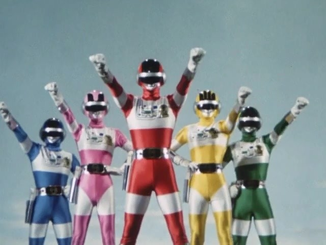

슈퍼전대 시리즈의 8번째 작품으로 초신성 플래시맨(지구방위대 후뢰시맨)에 이어 한국에 수입된 2번째 슈퍼전대 시리즈. 국내명은 대영팬더 더빙판에서는 '우주특공대 바이오맨', 파워레인저 퍼팩트 대백과 및 캡틴포스와 젠카이저에서는 '파워레인저 바이오맨'. 일본에서는 플래시맨이 바이오맨보다 늦게 나왔으나, 국내 수입은 플래시맨이 히트한 후인 1990년으로 플래시맨보다 1년 늦게 출시된다. 
신제국 기어에 맞서는 5인의 전사들을 그린 이 작품은 우선 배틀피버 J 이후 5작품만에 제목에 전대라는 단어가 들어가지 않는다. 그리고 멤버들이 전대 명칭 + 색, 혹은 반대로 색 + 전대 명칭의 명칭이 아닌 색 + 숫자로 구성된 특이한 코드네임을 지녔다. 덕분에 일본에서도 상당한 혼란이 있어 레드 원을 바이오 레드라고 부르는 경우도 있었다. 특히 핑크 파이브는 파이브맨의 파이브 핑크와 헷갈리는 경우가 많다.